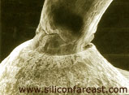

Ball Bond
Neck Breaks
Neck Breaking
is the
severing of the wire from its ball bond due to a
fracture in the neck. The
neck is the portion of the wire where the wire meets the ball bond. The
geometrical transition of the wire at the neck makes this portion
vulnerable to the thermo-mechanical stresses that the wires are
subjected to.
Neck Breaking is commonly due to
poor wirebonder set-up. Poor set-up includes improper bonding parameter settings, bond head movement settings, and worn-out or contaminated tools.
Incorrect bonding parameters can deform the bond excessively,
resulting in a thin, weak, or cracked neck which can easily fracture.
Improper bond head movements and low loop settings may subject the wires
to excessive stresses that can result in gross neck cracks which may
propagate into total fracture (see Figure 1). Worn-out
and contaminated tools can produce mechanical damage or defects in the wires which can act as
starting points for crack propagation.
Die overcoat
material reaching the neck regions of the bonds can likewise cause neck
breaks. Silicone gel coat
exerts tremendous forces on the wires if the unit is subjected to
excessive thermal stresses, pulling the necks away from their ball bonds. This mechanism can be easily prevented though by limiting the
die coat thickness, i.e., not letting the die coat level reach the neck
portion of the wires.
|
 |
|
Figure 1.
Neck Cracking that can lead to a Neck Break
|
Neck
breaks as a result of
wire sweeping during molding can also occur.
Excessive wire sweeping produces both a linear and angular
displacement of the wire, which tend to pull on and twist the neck of
the ball bond. The neck is
severed if its fracture strength is exceeded by the resultant stress.
Taut wires and low loop heights aggravate the effects of wire sweeping.
Die-to-plastic delaminations, such as those induced by an improper DTFS
process, can likewise result in neck breaks, since any movement of the
delaminated plastic with respect to the die would tend to pull away the
wires from the die.
Corrosion,
which can significantly reduce the diameter of a bond wire, can also
lead to neck breaks.
It is often due to the
presence of corrosive contaminants
such as Cl and S
in the wires and bonds.
Neck breaking
may be
accelerated
by SHRT,
Temp Cycle, and Thermal Shock.
See also:
Heel Breaks;
Package
Failure Mechanisms; Wirebonding; Failure Analysis
HOME
Copyright
©
2005.
EESemi.com.
All Rights Reserved.